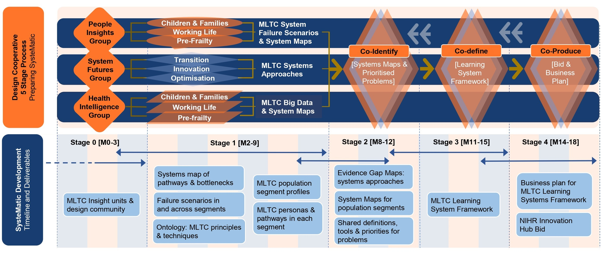

SysteMatic development phase¶
The SysteMatic development phase followed a 5 stage design process as outlined below:

{kind=link}
Stage 0¶
Convene the Design Cooperative with UK-representative Assets and International Relevance
Rapidly stand-up 3 linked working groups whose remit is described below:
1. People Insights: will put a diversity of patients, practitioners, and public partners – including those seldom heard, at the centre of design. The group will consolidate lived experiences into personas, patient journeys, system maps and system failure scenarios.
2. Health & Care Intelligence: will feed practitioners’ knowledge of MLTC segments into systems maps and failure scenarios, using local data to quantify MLTC pressures and trajectories. The group brings clinical, social care, managerial and public health professionals together with public advisors, systematically grounded with inputs from the People Insights group.
3. Systems Futures: will synthesise evidence for MLTC systems methodology and apply this to optimising existing services, driving innovation, and transitioning MLTC services to sustainable implementation of the right innovations. The group will draw upon thriving clusters of HealthTec industry partnerships and linked PPIE shaping new technologies and tools in Liverpool and Glasgow.
Stage 1¶
Deep Dives into MLTC Epidemiology, Experiences and Services in 3 Population Segments
The 3 working groups work in parallel to investigate MLTC system burdens from distinct perspectives.
Stage 2¶
Co-identify Priority MLTC Systems Failures and Targets for Action
The 3 working groups come together in a series of workshops to define and prioritise the system pressures, maps, conditions, and failure points.
Stage 3¶
Co-define Research, Technology and Intervention Priorities for SysteMatic
The 3 working groups will iterate through workshops to generate a consensus on the key research, technologies and intervention targets needed to initiate a ‘learning systems flywheel’ of MLTC innovation.
Stage 4¶
Co-producing the SysteMatic MLTC Innovation Hub Business Plan with System Partners
Stakeholders will co-produce a business plan to implement the MLTC learning system framework in the SysteMatic hub across Liverpool and Glasgow, with co-investment from academic health system and industry partners.